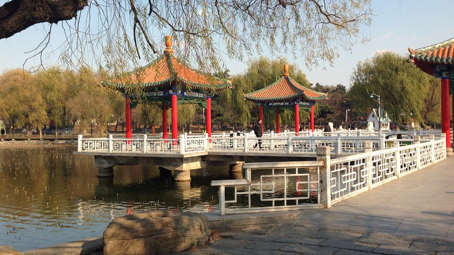
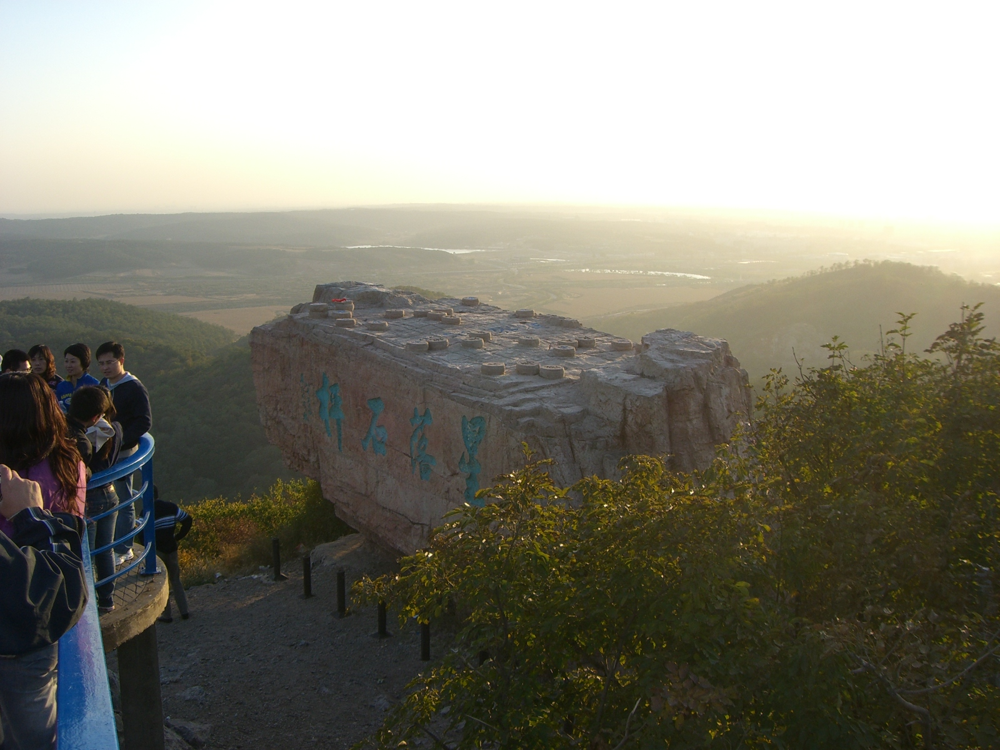

Top 3 Nature Spots in Shenyang
Beiling Park

Introduction
Beiling Park, covering 3.3 square kilometers, is Shenyang’s largest and most popular park—and it’s best known for surrounding Zhaoling Tomb (the imperial mausoleum of Huang Taiji). But beyond the tomb, the park offers a wealth of natural and recreational activities. Its centerpiece is a large lake (covering 40 hectares) where you can rent paddle boats or rowboats in summer; in winter, the lake freezes over, and locals skate or play ice hockey. The park also has dense pine forests (home to over 3,000 ancient pine trees), winding hiking trails, and flower gardens—cherry blossoms in spring, lotus flowers in summer, and chrysanthemums in autumn. There’s even a small zoo (20 CNY entry) with pandas, tigers, and monkeys, making it a great spot for families. Locals love coming here to exercise, fly kites, or have picnics on weekends.
Best Time to Visit
Spring (April–May): Cherry blossoms and azaleas bloom, 10–18°C.
Summer (July–August): Cool by the lake, 22–28°C—great for paddle boating.
Autumn (Oct–November): Golden leaves, 8–16°C—ideal for hiking.
Price
Free entry to the park; Zhaoling Tomb (inside the park): 50 CNY/adult.
Bike rental: 20 CNY/hour; paddle boat rental: 60 CNY/hour.
Zoo entry: 20 CNY/adult, 10 CNY/students.
South Lake Park

Introduction
South Lake Park, located in Shenyang’s Hunnan District, is a 52-hectare urban oasis known for its lakes, gardens, and relaxed vibe. Unlike Beiling Park (which has imperial ties), South Lake Park is purely for recreation—its main attractions are two large lakes (East Lake and West Lake) connected by small bridges, and flower gardens that change with the seasons. In spring, tulips and cherry blossoms bloom; in summer, lotus flowers cover the lake’s surface; in autumn, maple trees turn red. The park has winding paths for walking or jogging, benches under willow trees for resting, and even a small amusement park with a Ferris wheel (40 CNY/ride) that offers views of the park and nearby skyline. It’s a favorite among young people and families—you’ll see couples taking photos, parents pushing strollers, and friends having barbecues (in designated areas) on weekends.
Best Time to Visit
Summer (June–August): Lotus blooms, 22–28°C—cool by the lake.
Autumn (Sept–October): Maple leaves turn red, 15–20°C—great for photos.
Winter (Dec–February): Less crowded, but cold—some paths may be icy.
Price
Free entry to the park.
Ferris wheel: 40 CNY/adult, 20 CNY/kids (1.2–1.4 meters).
Paddle boat rental: 70 CNY/hour (2-person), 90 CNY/hour (4-person).
Qipanshan Scenic Area

Introduction
Qipanshan Scenic Area, about 20 kilometers northeast of Shenyang’s city center, is a 142-square-kilometer area of mountains, lakes, and temples—named after its main mountain, which looks like a “qipan” (Chinese chessboard) from above. It’s a popular spot for day trips, offering both natural beauty and cultural attractions. The main highlights include Qipanshan Mountain (hike to its peak for panoramic views of the surrounding countryside), Longtan Lake (a clear lake where you can fish or take a boat tour), and Xiangshan Temple (an ancient Buddhist temple built in the Tang Dynasty, with a large bronze Buddha statue). In winter, the area’s Qipanshan Ski Resort is a hit—with 12 ski slopes (for beginners and advanced skiers) and facilities like ski rentals and ski lessons. It’s a great place to escape the city and enjoy fresh mountain air.
Best Time to Visit
Winter (Dec–February): Skiing season, 0–5°C—fresh snow covers the mountains.
Summer (June–August): Cool mountain air (18–25°C), perfect for hiking and boating.
Autumn (Oct): Red leaves on the mountains, 10–16°C—beautiful photo backdrops.
Price
Scenic area entry: 30 CNY/adult, 15 CNY/students.
Longtan Lake boat tour: 50 CNY/adult, 25 CNY/kids.
Qipanshan Ski Resort: 180 CNY/person for 2 hours (includes ski rental); lessons extra.